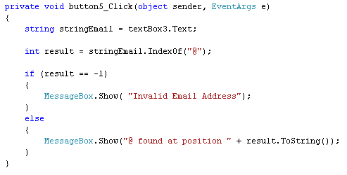
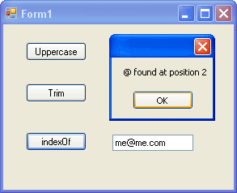
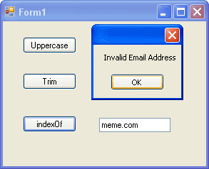
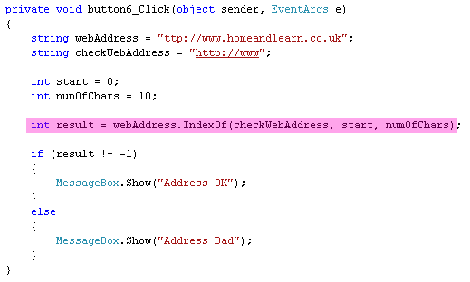
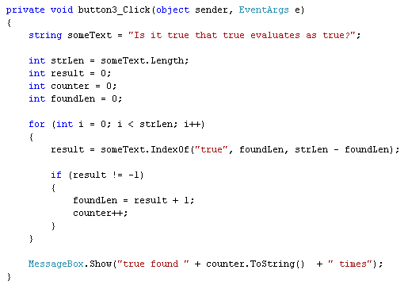

The IndexOf Method in C# .NET
<< Continues from the previous lesson
The IndexOf method can be used to check if one character is inside of another. For example, suppose you want to check an email address to see if it contains the @ character. If it doesn't you can tell the user that it's an invalid email address.
Add a new button and a new text box to your form. For the Text property of the text box, enter an email address, complete with @ sign. Double click your button to get at the code. Enter the following:

The first thing to examine is how IndexOf works. Here's the line of code:
int result = stringEmail.IndexOf( "@" );
The IndexOf method returns an integer. This number is the character's position in the word you're trying to check. In the code above, we want to check the word that's inside of the variable we've called stringEmail. We want to see if it contains the "@" character. This goes between the round brackets of IndexOf. If C# finds the character, it will tell you where it was (at position number 3 in the word , for example). This number is then stored inside of the int variable we've called result. If the character you're looking for can't be found, IndexOf will return a value of -1 (minus 1). The IF statement in our code checks the value of the result variable, to see what's inside of it. If it's -1 display an" Invalid Email Address message"; If it's not -1, a different message is displayed.
Run your programme and click the button. Here's the form with an @ character in the text box:

And here's what happens when we delete the @ character from the text box:

Note that the first message box displays "@ found at position 2". If you look at the email address in our text box, however, it's me@me.com. So you might be thinking that the @ character is at position 3, not 2. If C# were to start counting at 1, you'd be right. But it doesn't. When you use the IndexOf method, the count starts at zero.
You can also specify a start position, and a character count for a search. This is useful if you want to do things like checking a longer string and counting how many occurrences there are of a particular character or characters. Or if you want a simple check to see if, say, a website entered in a text box on your form begins with http://www. Here's some code that does just that:

Have a look at this part of the highlighted line:
webAddress.IndexOf( checkWebAddress, start, numOfChars )
This time, we have three parameters inside of the round brackets of IndexOf. The first one is the string we want to check (checkWebAddress). Then we have start, and numOfChars. The start variable is where in your full string (webAddress) you want to start checking. The third parameter, numOfChars, is the number of characters you want to check from that starting position. In our code, the start is 0 and the number of characters is 10.
And finally, for IndexOf, here's some code that checks a long string of text
and counts how many times the word true appears:

The code is a bit complex, so don't worry if you don't understand it all. But it's just using IndexOf with three parameters: the word to search for, a starting position, and how many characters you want to check. The start position changes when the word is found; and the number of characters to count shrinks as you move through the word.